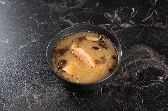
ODONG
Odong makaronai, lašiša, sojų daigai, shiitake grybai
4,50 €
Odong makaronai, lašiša, sojų daigai, shiitake grybai
4,50 €
Miso sultinys, tofu sūris, japoniškas ridikas
2,60 €
Ryžiai, lašiša, nori lapai, sezamas, svogūnų laiškai
4,50 €
Krevetės, japoniškas ridikas, wakame, stikliniai makaronai
5,00 €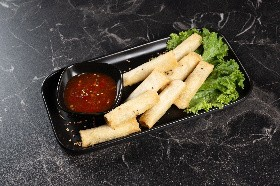
Spring rolls su daržovėmis
3,50 €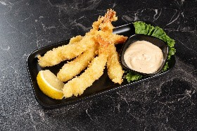
Lašišos iešmeliai su wakame salotomis
6,20 €
Gruzdinti koldūnai su daržovėmis
3,50 €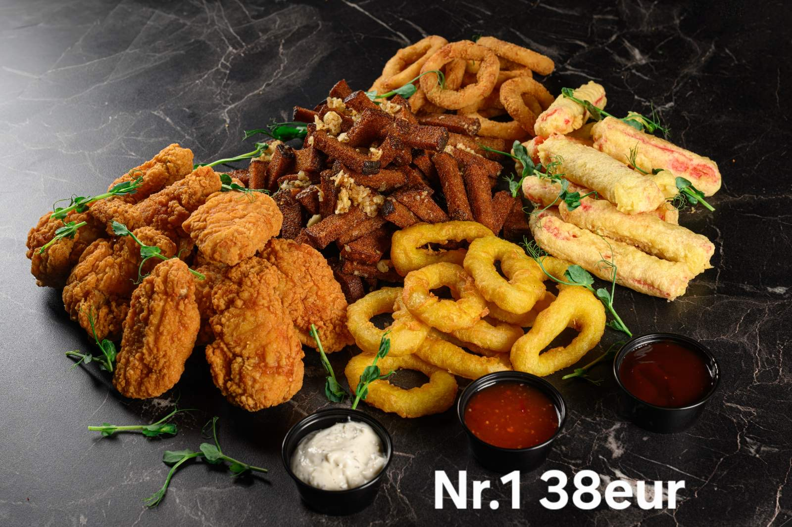
Traškūs vištienos sparneliai, kalmarų žiedai, svogūnų žiedai, kepta duona su česnaku, krabų surimio lazdelės
38,00 €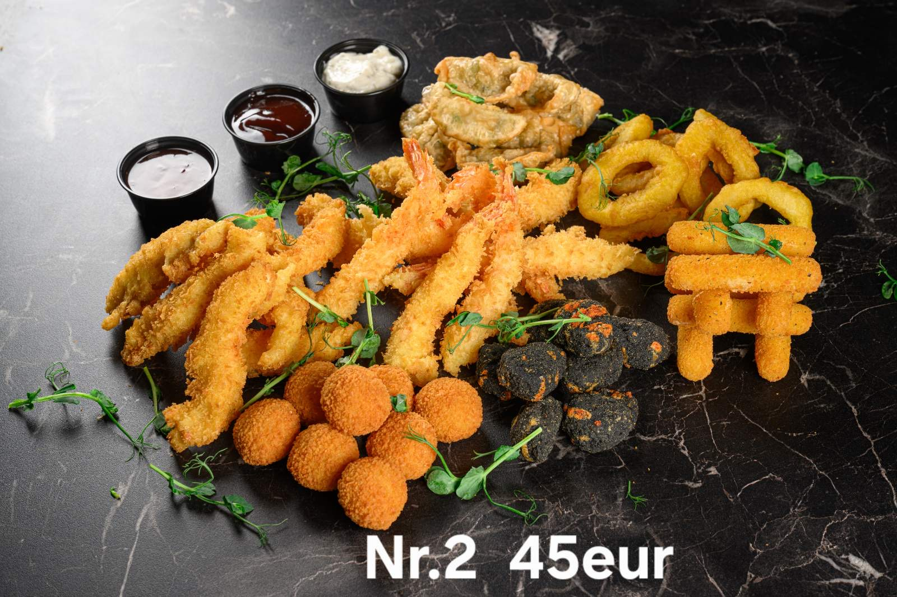
Kalmarų žiedai, karališkos krevetės, čederio sūrio užkandėlė, mocarelos lazdelės, gardūs sūrio rutuliukai, traškios vištienos juostelės, gyoza koldūnai su krevečių įdaru
45,00 €
Keptas bananas, kokoso drožlės, aviečių padažas
5,90 €
Keptas bananas su skirtingais padažais, riešutai
5,90 €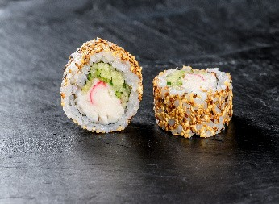
Krabų mėsa, agurkas, sezamas
5,90 €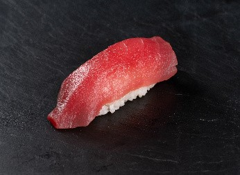
Tunas, wasabi
3,90 €
Ungurys, sezamas, padažas
3,90 €
Lašiša
3,20 €
Aštri lašiša, marinuota
3,20 €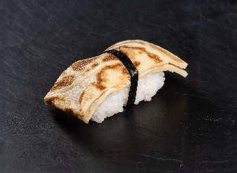
Saldus japoniškas omletas
2,90 €
Krevetė
3,90 €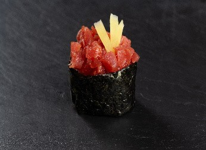
Aštrus tunas
3,90 €
Aštri lašiša
3,50 €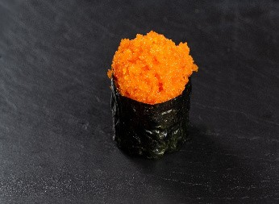
Orange
3,20 €
Lašišų ikrai
4,50 €
Wakame salotos
2,90 €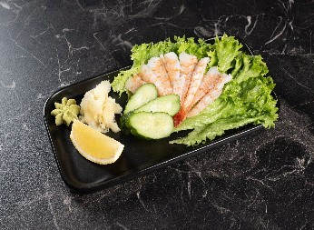
Ebi krevetė, agurkas, citrina, sezamas, ridikas
7,50 €
Lašiša, agurkas, citrina, sezamas, ridikas
7,50 €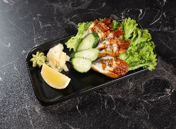
Ungurys, agurkas, citrina, sezamas, ridikas
8,50 €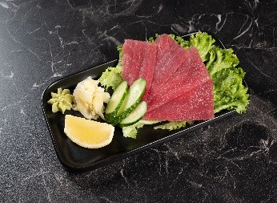
Tunas, agurkas, citrina, ridikas
8,50 €
Japoniškas ridikas, vasabi
4,00 €
Agurkas, sezamas
3,50 €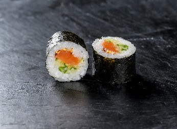
Lašiša, agurkas, sezamas
4,70 €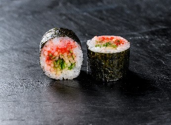
Masago ikrai, agurkas
4,00 €
Avokadas
4,00 €
Lašiša, mangas, masago ikrai
4,70 €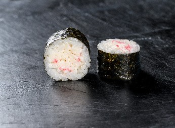
Surimi krabų mėsa, sezamas
4,00 €
Japoniškas omletas
3,50 €
Lašiša
3,70 €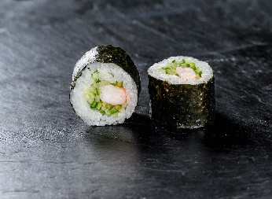
Krevetė, agurkas
4,90 €
Ungurys, sezamas
4,90 €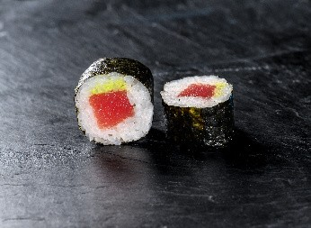
Tunas, wasabi
4,50 €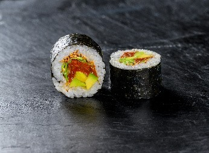
Saulėje džiovinti pomidorai, avokadas, sezamas
5,90 €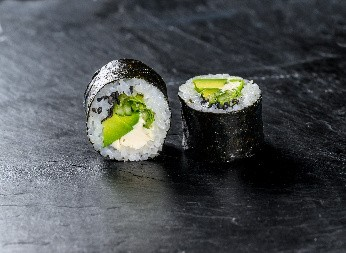
Tofu sūris, salota, sezamas, agurkas, avokadas
4,50 €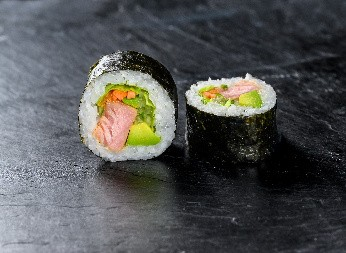
Jautienos nugarinė, agurkas, salota, morka, avokadas
5,90 €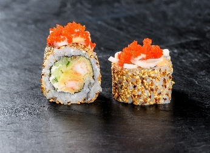
Krevetė, kreminis sūris, masago ikrai, wakame, agurkas
8,90 €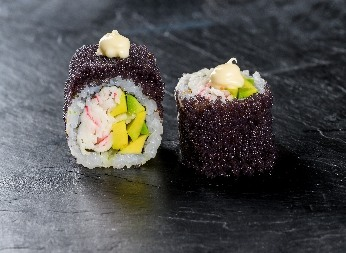
Daržovių suktinukas
6,90 €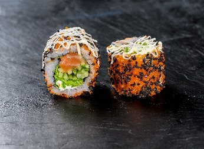
Lašiša, kreminis sūris, daržovės
7,90 €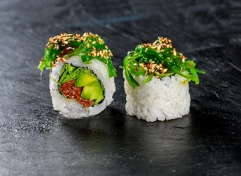
Wakame salotos, daržovės
7,90 €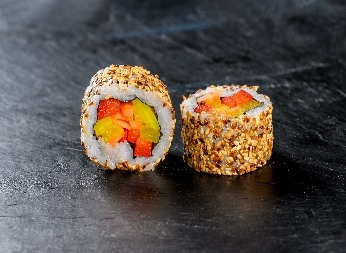
Krabų mėsa, agurkas, masago ikrai
7,90 €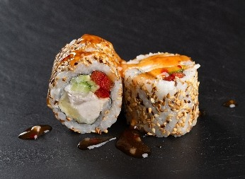
Lašiša, kreminis sūris, daržovės
7,90 €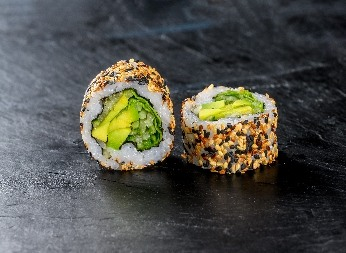
Daržovės, sezamas
6,90 €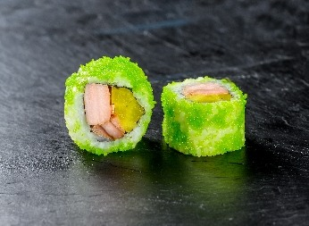
Tunas, teriyaki padažas
7,90 €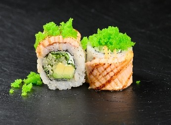
Lašiša, daržovės, padažas
7,90 €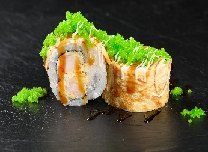
Lašiša, wakame salotos
8,50 €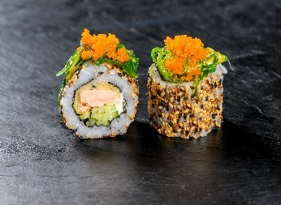
Krevetė, kreminis sūris, agurkas
8,90 €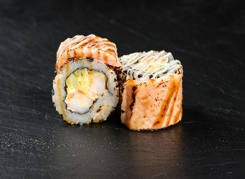
Tamago, krevetė, kreminis sūris
8,90 €
Kanikama, krevetė, sūris
8,90 €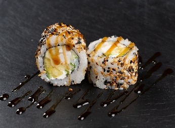
Vištiena, ananasas, agurkas
7,90 €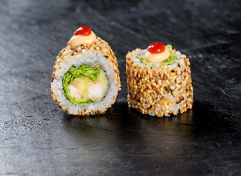
Krevetė, salotos, aštrus padažas
7,90 €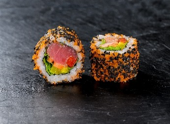
Tunas, daržovės, masago ikrai
9,20 €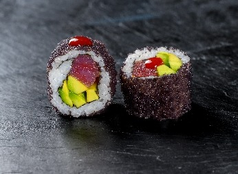
Tunas, avokadas, masago ikrai
9,20 €
Krevetė, agurkas, kreminis sūris
8,90 €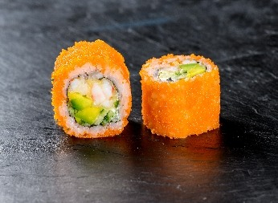
Krevetė, avokadas, agurkas
8,90 €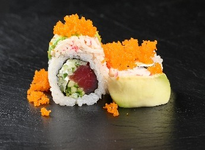
Tunas, avokadas, kreminis sūris
9,20 €
Lašiša, tunas, krabų surimis, avokadas
9,20 €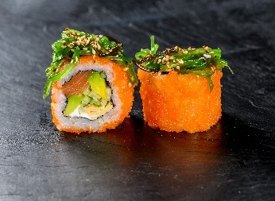
Lašiša, kreminis sūris, daržovės
8,90 €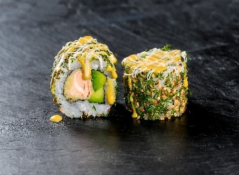
Lašiša, avokadas, krapai
7,90 €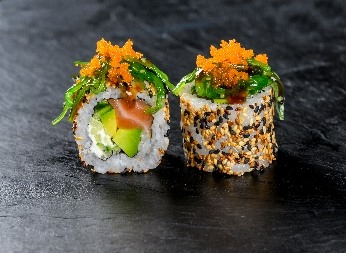
Lašiša, agurkas, avokadas, wakame
8,90 €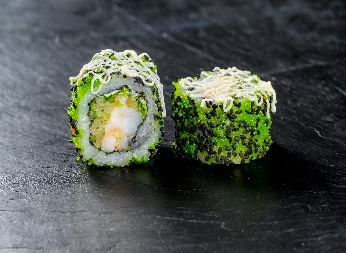
Krevetė, agurkas, kreminis sūris
8,90 €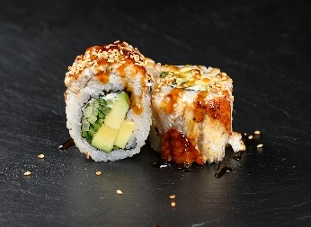
Ungurys, agurkas, avokadas, teriyaki padažas
11,50 €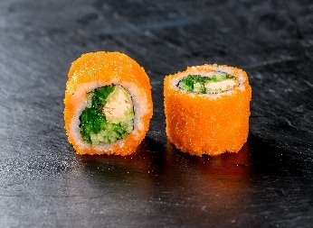
Lašiša, agurkas, wakame
7,90 €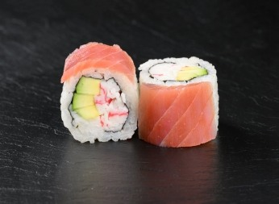
Lašiša, krabų mėsa, avokadas, kreminis sūris
7,90 €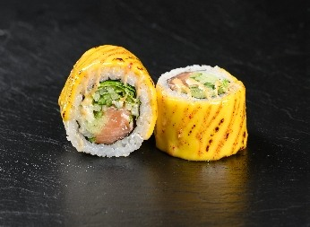
Lašiša, salotos, agurkas, sūris
9,20 €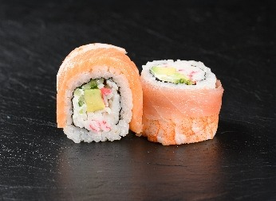
Lašiša, krevetė, tunas, avokadas
11,50 €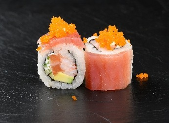
Lašiša, krevetė, tunas, avokadas
9,20 €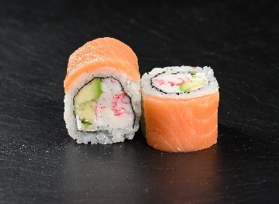
Tunas, avokadas, krabų mėsa
9,20 €Lašiša, masago ikrai, svogūno laiškai, teryaki padažas
8,90 €Lašiša, masago ikrai, svogūno laiškai, kreminis sūris, medaus-garstyčių padažas
8,90 €Krevetės, kreminis sūris, masago ikrai, agurkas, sezamų padažas
9,90 €Ungurys, masago ikrai, agurkas, teryaki padažas, sezamas
11,50 €Wakame, salotos, teryaki padažas, sezamas
7,90 €Lašiša, agurkas, krabų mėsa, spicy padažas, keptas panko džiūvėsėliuose
8,90 €Lašiša, sūris, masago ikrai, svogūno laiškai, teryaki padažas
8,90 €Tunas, masago ikrai, salota, japoniškas ridikas, teryaki padažas
9,90 €Krevetės, mango, kreminis sūris, kim-shi padažas, masago ikrai
9,90 €* Pažymėti produktai gali turėti alergenų. Prašome kreiptis į personalą.